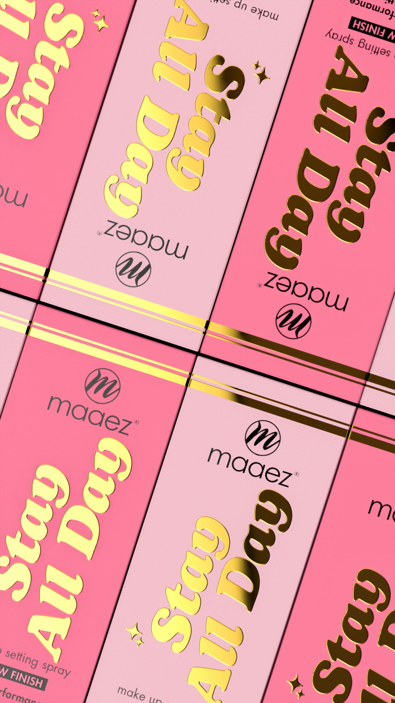
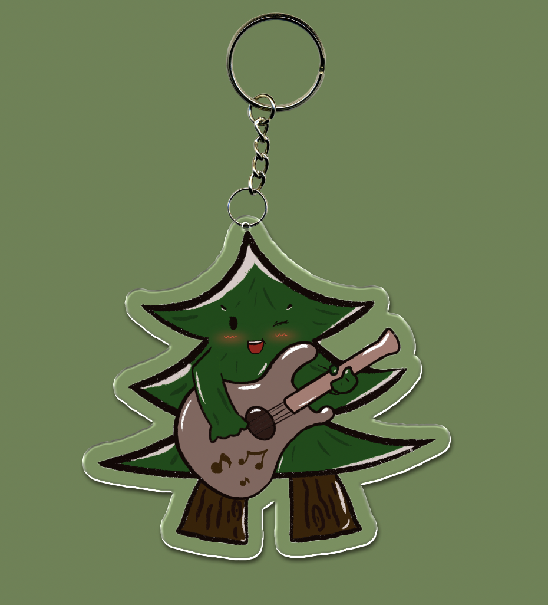

Show me the picture I made before
(Some picture obtained from the browser)
If you want to know more good design form others, try to click on it.

Design No. 1. Pink packaging.
The pink packaging and golden font highlight the product very well.
Design No. 2. Fallen leaves.
The golden fallen leaves show the charm of autumn.

Design No. 3 coffee logo
This is the store logo I designed last semester. Because the restaurant mainly sells coffee, it is designed in the form of coffee beans.

Design No. 4 lost arvhitecture
This is a design about the TV column, where we can see many forgotten ancient buildings.

Design No. 5 Mascot
This is a mascot of a music festival. The venue of the music festival is in the forest, so the mascot is made in the form of a small tree.

Design No. 6 Modlling font
This is the use of Ai software to imitate the artistic fonts of some brands through some deformation methods, so as to bring aesthetic visual effects.